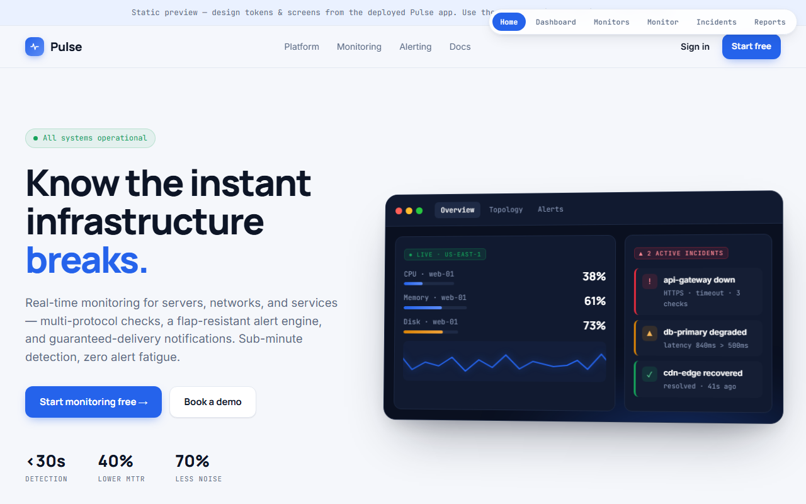

Open live preview →Pulse Monitoring
Real-time infrastructure monitoring: multi-protocol health checks, a flap-resistant alert engine, and guaranteed-delivery notifications. Sub-minute detection, zero alert fatigue.
21/21 smoke11/11 invariantsReviewer PASS